内存取证和文件恢复常见操作
内存取证和文件恢复常见操作
常用工具
- Volatility
- Elcomsoft Forensic Disk Decryptor
- EasyRecovery
- MedAnalyze
- FTK
内存
- 分析进程、内存数据
- 提取分析指定进程的特定内存数据
VMDK
- 本质上是物理硬盘的虚拟版，也会存在跟物理硬盘的分区和扇区类似的填充区域，可以利用这些填充区域把我们需要隐藏的数据进行处理，从而避免文件增加VMDK文件的大小，也可避免由于VMDK文件大小的改变所带来的可能导致虚拟机错误的问题。
磁盘
常见的磁盘分区格式：
- Windows:FAT12->FAT16->FAT32->NTFS
- Linux:EXT2->EXT3->EXT4
以【[HDCTF2019]你能发现什么蛛丝马迹吗】展开
查看系统版本
# volatility -f memory.img imageinfo |
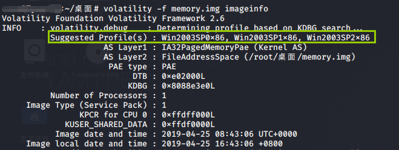
查看进程
# volatility -f memory.img --profile=Win2003SP0x86 pslist |
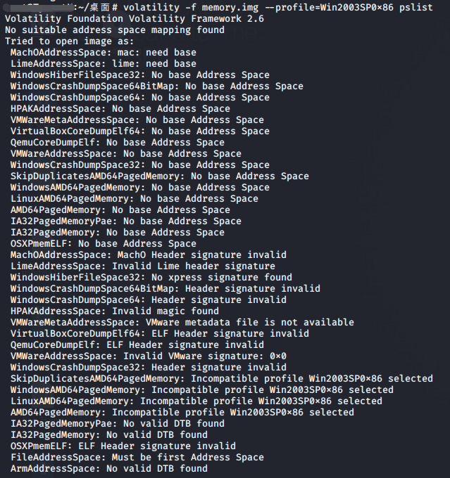
针对Win2003SP0x86产生报错，故排除这个镜像
# volatility -f memory.img --profile=Win2003SP1x86 pslist |
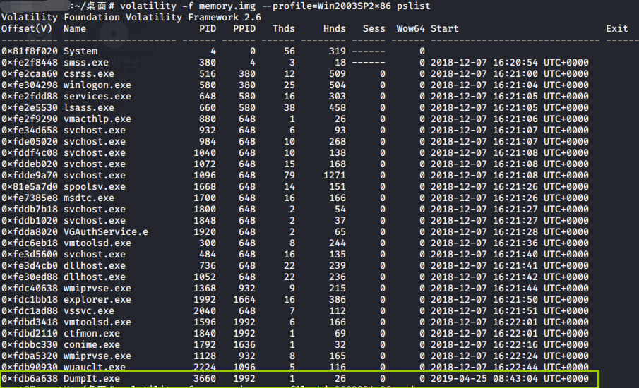
根据时间可以发现DumpIt.exe有东西
与该命令相似的为
# volatility -f memory.img --profile=Win2003SP2x86 pstree |
不同点在于pstree顾名思义显示的是进程树，表明了各进程之间的从属关系。
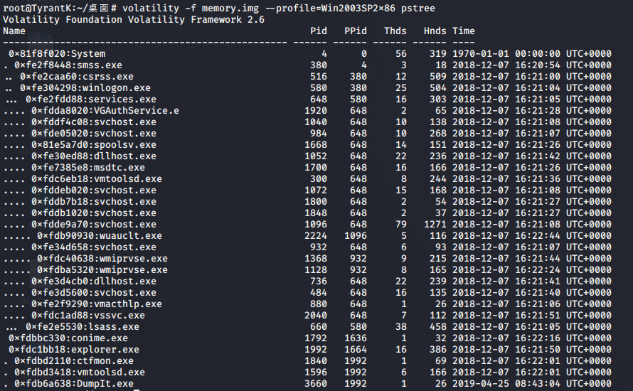
而
# volatility -f memory.img --profile=Win2003SP2x86 psscan |
则更加全面地进行了扫描，从而显示出被隐藏的进程，如病毒等
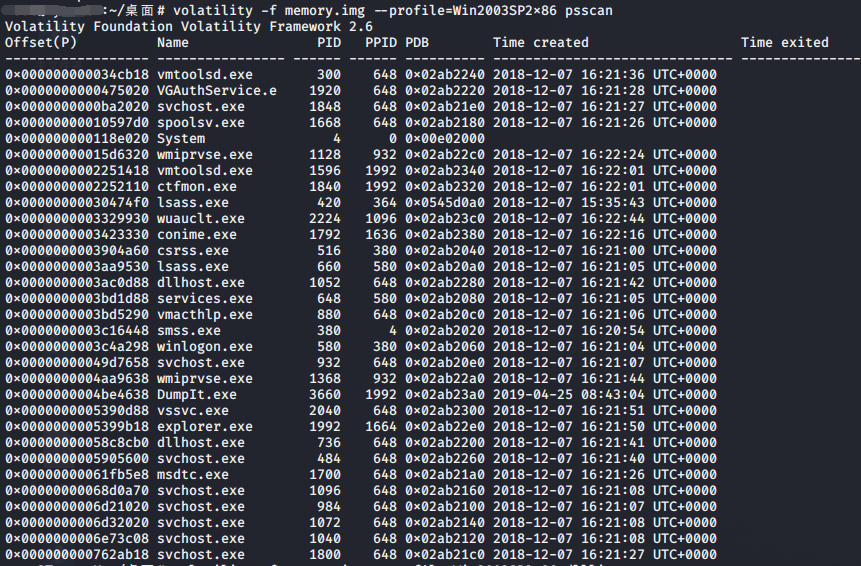
将内存中的某个进程数据以 dmp 的格式保存出来
# volatility -f memory.img --profile=Win2003SP2x86 memdump -p 1992 --dump-dir=./ |
以【[V&N2020 公开赛]内存取证】展开
通过上述内存取证起手式得到系统版本
查看进程
volatility -f mem.raw --profile=Win7SP1x86_23418 pslist |
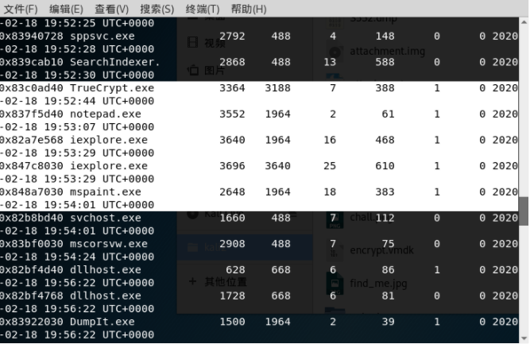
关注
TrueCrypt.exe 3364 |
依次处理
1）notepad=>editbox
volatility -f mem.raw --profile=Win7SP1x86_23418 editbox |
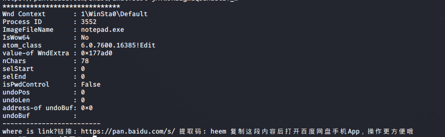
2）mspaint=>Gimp
https://www.gimp.org/downloads/
不断调节位移、宽度和高度，
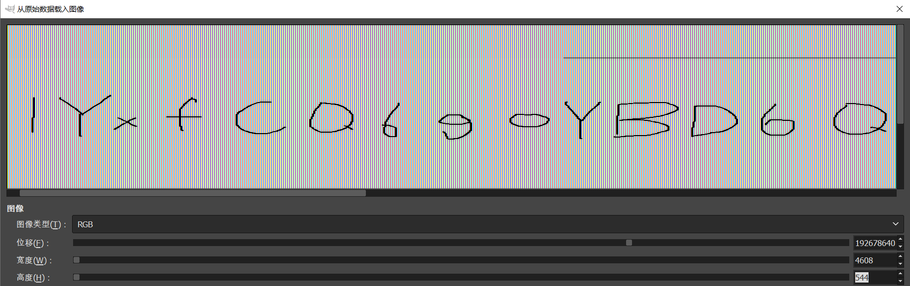
出现【1YxFCQ6goYBF6Q】
3）TrueCrypt=>Elcomsoft Forensic Disk Decryptor
Decrypt or mount disk->TrueCrypt->select&Memory dump&Browse->mount
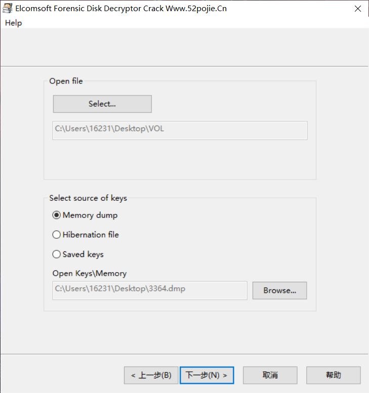
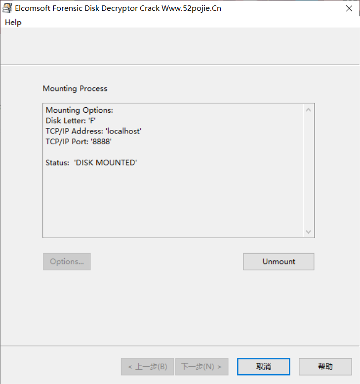
发现多了个F盘，其中存在key
uOjFdKu1jsbWI8N51jsbWI8N5 |
得到VOL的时候就该想到需要挂载，使用VeraCrypt,按之前学到的用法
此处注意需要勾选TrueCrypt
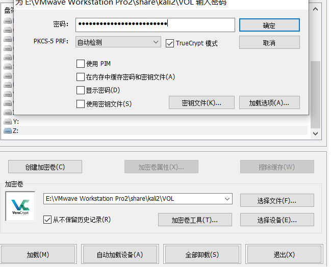
得到fffflag.zip
以【[XMAN2018排位赛]file】展开
extundelete恢复原理：
在linux下可以通过“ls -id”来查看某个文件或者目录的inode值，
~/桌面# ls -id / |
从而得到桌面的innode值为2
而当使用extundelete来恢复文件时并不依赖特定的文件格式，
首先extundelete会通过文件的inode信息来获得当前文件系统下所有文件的信息，包括文件名和inode，包括已存在的和删除的文件。
再通过inode信息结合日志去查询该inode所在的block位置，包括直接块、间接块等信息。
最后利用dd命令将这些信息备份出来，从而恢复数据文件。
extundelete attachment.img --restore-all |
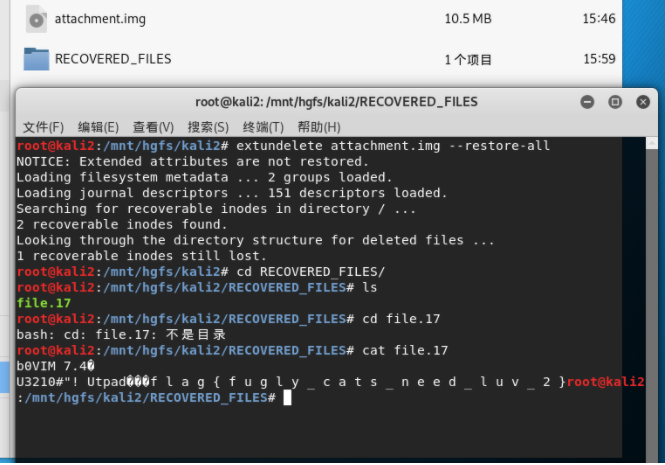
以【[BSidesSF2019]diskimage】展开
前期通过zsteg分离出png中的数据后，利用testdisk进行分析。
testdisk disk.dat |
一路回车
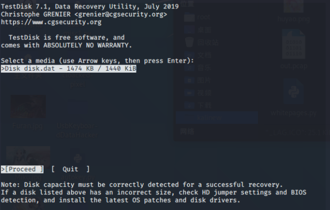
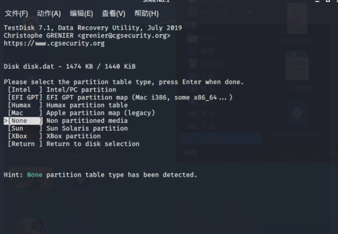
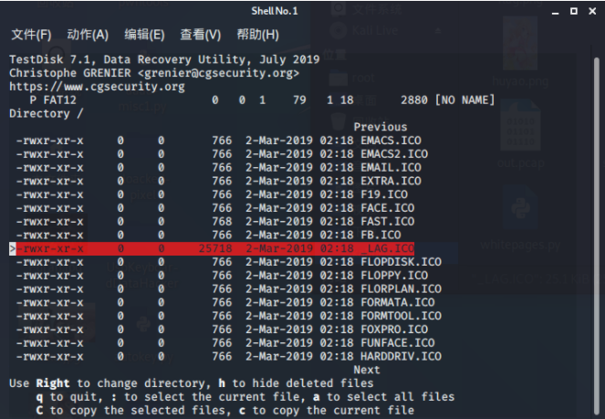
选择最不同的那一个，根据提示进行copy，得到flag
关于testdisk的(中文版官方指南)[https://www.cgsecurity.org/wiki/Testdisk_%E6%93%8D%E4%BD%9C%E6%8C%87%E5%8D%97#.E9.97.AE.E9.A2.98.E4.B8.BE.E4.BE.8B]有更加深入的功能解说和详细用法